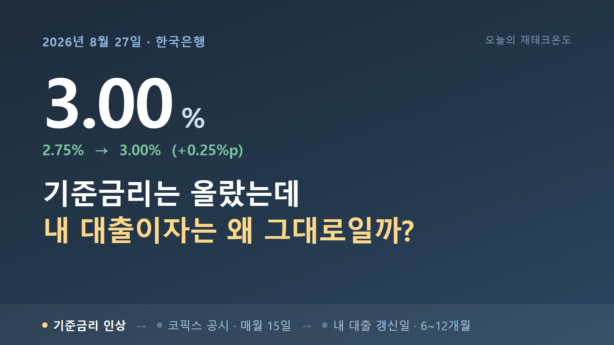
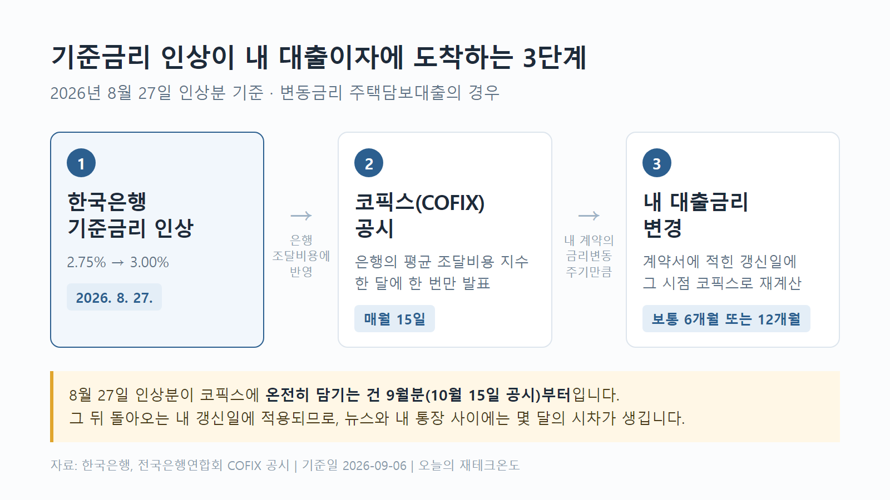
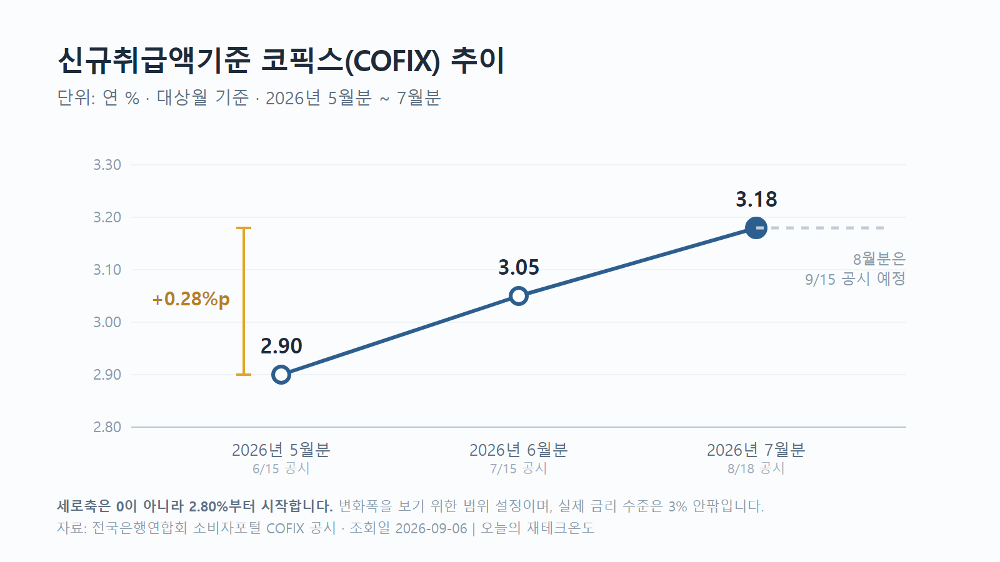
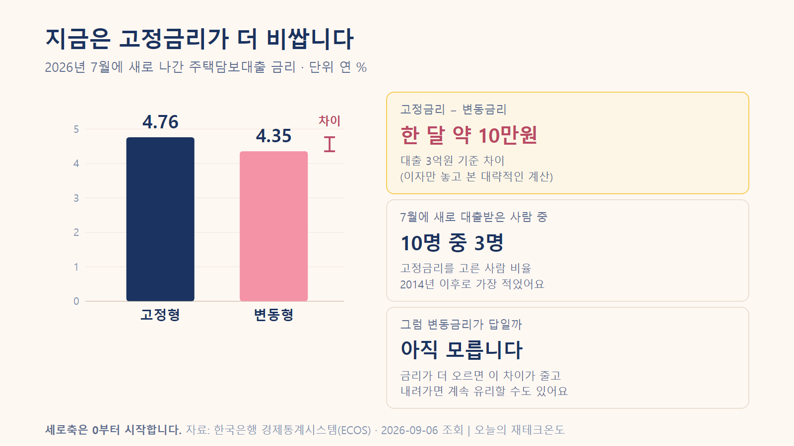

8월 말에 기준금리가 올랐다는 뉴스를 봤습니다.
대출이 있으니 "이번 달부터 이자가 좀 늘겠구나" 했는데, 막상 확인해보니 그대로더라고요.
제가 뭔가 착각했나 싶어서 찾아봤습니다.
은행이 봐준 것도, 뉴스가 틀린 것도 아니었어요. 기준금리가 제 대출이자까지 오는 데 시간이 걸리는 구조였습니다.
그 구조를 알고 나니까 언제 얼마가 오를지 미리 계산해볼 수 있게 되더라고요. 오늘은 그 얘기를 해보려고 합니다.
한국은행이 8월 27일에 기준금리를 연 2.75%에서 3.00%로 올렸습니다.
그런데 찾아보니 이게 처음이 아니었어요.
| 시점 | 기준금리 | 변화 |
|---|---|---|
| 2026년 7월 16일 이전 | 2.50% | — |
| 2026년 7월 16일 | 2.75% | +0.25%p |
| 2026년 8월 27일 | 3.00% | +0.25%p |
7월에 한 번 올리고, 8월에 또 올린 겁니다. 6주 사이에 두 번, 합치면 0.50%포인트예요.
여기서 저도 헷갈렸던 게 하나 있습니다. "0.25%포인트"와 "0.25%"는 다릅니다.
2.75%에서 3.00%가 된 건 0.25%'포인트' 오른 거예요.
이걸 "0.25% 올랐다"고 쓰면 2.75%의 0.25%니까 거의 안 오른 셈이 됩니다.
기사에서도 섞여 나오는 경우가 있어서 한 번 짚고 갑니다.
물가 때문입니다.
금융통화위원회는 물가 오름세가 더 퍼지기 전에 미리 막는 게 중요하다는 취지로 이유를 밝혔어요.
그리고 며칠 뒤에 나온 숫자가 그 걱정을 뒷받침했습니다. 9월 2일 발표된 8월 소비자물가가 1년 전보다 3.1% 올랐거든요. 7월에 2.8%였다가 다시 3%대로 올라선 겁니다.
식료품이나 에너지처럼 가격이 들쭉날쭉한 걸 빼고 본 물가는 3.4%로 더 높았고요.
그런데 이 3.1%를 그대로 받아들이기 전에 걸러볼 부분이 있었습니다.
작년 8월에 한 통신사가 전체 가입자 요금을 절반 깎아줬어요. 그래서 작년 통신비가 유난히 낮았고, 올해와 비교하니까 휴대전화료가 26.7% 오른 것처럼 잡혔습니다.
요금이 실제로 그만큼 오른 게 아니라, 비교 대상이던 작년 숫자가 낮았던 거죠.
물가가 오르는 중인 건 맞습니다. 다만 3.1%를 체감물가로 그대로 읽으면 조금 부풀려 보게 됩니다.
참고로 금통위 결정은 8월 27일이고, 이 물가 발표는 9월 2일이에요. 숫자를 보고 올린 게 아니라 앞질러서 막겠다는 판단이었던 셈입니다.
제가 제일 궁금했던 부분입니다.
찾아보니 기준금리가 제 대출이자에 도착하려면 중간에 두 단계를 더 거쳐야 했어요.
[1단계] 한국은행 기준금리 인상
↓ 은행 조달비용에 반영
[2단계] 코픽스(COFIX) 공시 — 매월 15일, 한 달에 한 번
↓ 내 대출의 금리변동주기에 따라
[3단계] 내 대출금리 변경 — 보통 6개월 또는 12개월마다
코픽스(COFIX)는 은행들이 돈을 마련하는 데 실제로 얼마를 썼는지 모아서 계산한 숫자예요.
은행 입장에서 보면 일종의 원가표라고 생각하면 이해하기 쉽습니다. 변동금리 주택담보대출은 대부분 이 코픽스에 은행별 가산금리를 얹어서 금리를 정해요.
그런데 이게 중요합니다. 코픽스는 한 달에 한 번, 매월 15일에만 나옵니다.

| 공시일 | 대상월 | 신규취급액기준 코픽스 |
|---|---|---|
| 2026년 6월 15일 | 2026년 5월 | 2.90% |
| 2026년 7월 15일 | 2026년 6월 | 3.05% |
| 2026년 8월 18일 | 2026년 7월 | 3.18% |
지금 은행 변동금리에 쓰이고 있는 건 8월 18일에 나온 7월분 3.18%입니다. 다음 공시는 9월 15일이고요.
7월분이라는 건 7월 한 달 동안 은행이 돈을 조달한 비용이라는 뜻이에요.
그러니까 8월 27일 인상은 이 숫자에 들어가 있을 수가 없습니다. 아직 일어나지도 않은 일이었으니까요.
| 공시일 | 대상월 | 8월 27일 인상분 반영 정도 |
|---|---|---|
| 2026년 8월 18일 | 2026년 7월 | 반영 없음 (인상 전) |
| 2026년 9월 15일 | 2026년 8월 | 아주 조금 (8/27~8/31, 약 5일치) |
| 2026년 10월 15일 | 2026년 9월 | 온전히 반영 (한 달 전체) |
9월 15일에 8월분 코픽스가 나옵니다. 그런데 8월분은 8월 한 달 평균이고, 인상은 27일이었어요. 한 달 중 5일치만 오른 조건인 셈입니다.
8월 인상이 온전히 담기는 건 9월분 코픽스, 그러니까 10월 15일 공시분부터예요.
코픽스가 올라도 제 대출금리가 그날 바로 바뀌지는 않습니다.
변동금리 대출에는 금리변동주기라는 게 있어요. 계약할 때 정한 주기(보통 6개월 아니면 12개월)가 돌아오는 날, 그 시점의 코픽스로 금리를 다시 계산합니다.
제 갱신일이 11월이라면, 8월 인상은 11월에야 제 이자에 나타나는 거죠.
순서대로 놓고 보면 이렇게 됩니다.
8월 27일 인상 → 10월 15일 코픽스에 온전히 반영 → 그 뒤 돌아오는 내 갱신일에 적용
뉴스와 제 통장 사이에 몇 달이 비는 이유가 여기 있었습니다.
시차가 있다는 건 아직 안 왔을 뿐이지 오고 있다는 뜻이기도 합니다. 미리 계산해두면 마음의 준비라도 되겠죠.
계산은 단순합니다.
대출잔액 × 금리 상승폭 = 1년에 늘어나는 이자기준금리 0.50%포인트가 그대로 대출금리에 전달된다고 치면 이렇게 됩니다.
| 대출잔액 | 금리 +0.25%p | 금리 +0.50%p | +0.50%p의 월 환산 |
|---|---|---|---|
| 1억원 | 연 25만원 | 연 50만원 | 약 4만 2천원 |
| 3억원 | 연 75만원 | 연 150만원 | 약 12만 5천원 |
| 5억원 | 연 125만원 | 연 250만원 | 약 20만 8천원 |
3억원을 빌렸다면 1년에 150만원, 한 달로 나누면 12만 5천원 정도예요. 매달 고정지출이 그만큼 늘어난다고 보면 됩니다.
다만 이 계산은 이자만 놓고 본 겁니다.
원리금균등으로 갚고 있다면 매달 원금도 함께 줄어들어요. 그래서 실제 월 상환액 변화는 이 숫자와 다릅니다.
기준금리가 오른 만큼 대출금리가 100% 그대로 따라간다는 보장도 없고요.
정확한 금액이라기보다 "대충 이 정도 규모구나" 감을 잡는 용도로 봐주시면 됩니다.
코픽스는 벌써 4개월째 오르는 중입니다. 5월분 2.90%에서 7월분 3.18%로, 두 달 사이 0.28%포인트 올랐어요.
3억원 기준으로 1년에 84만원, 5억원이면 140만원입니다.
은행들도 이미 반영했고요. 국민은행은 8월 19일부터 변동형 주택담보대출 금리를 연 4.25~5.65%에서 연 4.38~5.78%로 올렸습니다.
그러니까 8월 27일 인상은 아직 오지 않은 다음 파도인 셈이에요.
보통 "금리 오를 것 같으면 고정으로 바꿔라"고들 하죠. 저도 그렇게 생각했는데, 숫자를 보니 얘기가 단순하지 않았습니다.
한국은행이 8월 26일 발표한 자료를 보면 7월에 새로 나간 주택담보대출 금리가 이렇습니다.
| 구분 | 2026년 7월 금리(연) | 전월 대비 |
|---|---|---|
| 주택담보대출 전체 | 4.48% | +0.12%p |
| 고정형 | 4.76% | +0.23%p |
| 변동형 | 4.35% | +0.08%p |

고정형이 변동형보다 0.41%포인트 비쌉니다.
3억원 기준으로 1년에 123만원, 한 달에 10만원 차이예요. 당장 나가는 돈만 보면 변동형이 훨씬 유리하죠.
같은 자료를 보면 7월에 새로 받은 주택담보대출 중 고정금리를 고른 비중이 31.9%였습니다.
전달보다 5.8%포인트 줄었어요. 2014년 2월 이후 가장 낮은 수준입니다.
바꿔 말하면 10명 중 7명이 변동금리를 골랐다는 뜻입니다.
한국은행 연구에서도 같은 흐름이 확인되더라고요. 고정과 변동의 금리차가 벌어질수록 변동금리를 고르는 사람이 늘어난다는 분석이었습니다. 지금이 딱 그 상황이에요.
당장 싼 쪽을 고르는 건 자연스러운 선택이에요. 문제는 지금이 금리를 내리는 시기가 아니라 올리는 시기라는 점입니다.
| 지금 | 앞으로 | |
|---|---|---|
| 변동형 | 월 약 10만원 저렴 (3억 기준) | 기준금리 오르면 따라 오름 |
| 고정형 | 월 약 10만원 비쌈 | 기준금리 올라도 그대로 |
변동형이 지금 아끼는 0.41%포인트는, 기준금리가 0.5%포인트만 더 올라도 사라집니다. 그 뒤로는 손해 쪽으로 넘어가고요.
그렇다고 고정으로 갈아타라는 얘기는 아닙니다.
갈아탈 때는 중도상환수수료도 듭니다. 대출이 얼마나 남았는지, 앞으로 금리가 어떻게 될지도 같이 봐야 하고요.
3년 안에 집을 팔거나 대출을 갚을 생각이라면 변동형이 나을 수도 있습니다.
제가 하고 싶은 얘기는 하나예요. "지금 싸니까"만 보고 골랐다면, 그 판단의 근거가 생각보다 얇다는 것 정도는 알고 계시면 좋겠습니다.
조금은요. 기대만큼은 아니지만요.
같은 한국은행 자료에서 7월 예금은행 저축성수신금리는 연 3.21%였습니다. 전달보다 0.13%포인트 올랐어요.
같은 기간 가계대출금리는 연 4.64%였고요. 빌릴 때와 맡길 때의 차이가 1.43%포인트입니다.
그런데 예금은 여기서 두 가지를 더 빼야 하더라고요. 세금과 물가입니다.
3.21%에서 이자소득세 15.4%를 떼면 실제로 손에 남는 건 연 2.7% 정도가 됩니다.
| 비교 대상 | 값 | 기준 시점 |
|---|---|---|
| 예금금리 (세전) | 3.21% | 2026년 7월 |
| 예금금리 (세후, 단순 계산) | 약 2.7% | 2026년 7월 |
| 물가 상승률 | 3.1% | 2026년 8월 |
예금금리는 7월, 물가는 8월 기준입니다. 예금금리 8월 통계는 아직 발표 전이라 한 달 차이가 납니다.
세후 2.7%는 물가 상승률 3.1%에 못 미칩니다.
앞에서 본 통신요금 착시를 감안하면 실제 격차는 이보다 좁을 거예요.
그래도 분명한 게 하나 있습니다. 지금 예금은 물가를 넉넉히 이기는 자리가 아니에요.
통장 숫자는 늘어나는데 그 돈으로 살 수 있는 물건은 별로 안 늘어나는 구간인 거죠. "금리 올랐으니 예금 이자 좀 붙겠네" 하기엔 아직 이릅니다.
금리가 앞으로 어떻게 될지 맞히는 건 어렵습니다. 대신 지금 확인할 수 있는 걸 보는 게 낫겠죠.
마지막 게 제일 중요해요. 갱신일을 알면 그 무렵 코픽스를 보고 미리 계산해볼 수 있거든요.
| 날짜 | 무슨 일 |
|---|---|
| 2026년 9월 15일 | 8월분 코픽스 공시 (전국은행연합회) |
| 2026년 9월 30일 | 한국은행 8월 가중평균금리 발표 — 예금·대출금리 갱신 |
| 2026년 10월 15일 | 9월분 코픽스 공시 — 8월 인상분 온전히 반영 |
| 2026년 10월 22일 | 한국은행 금융통화위원회 — 다음 기준금리 결정 |
금통위는 8월 결정에서 앞으로의 정책을 물가와 경기, 금융안정 상황을 보면서 정하겠다고 했습니다. 더 올릴 가능성을 닫지 않은 표현이에요.
다만 이건 "오른다"가 아니라 아직 안 정해졌다는 뜻입니다. 다음 결정은 10월 22일이고요.
방향을 맞히려고 애쓰기보다, 오르는 경우와 그대로인 경우 각각 내 상환액이 얼마가 되는지 미리 계산해두는 쪽이 마음이 편할 것 같습니다.
※ 본문의 대출·예금금리 수치는 한국은행 경제통계시스템(ECOS) 원자료에서 직접 확인했습니다. 통계표 121Y006(예금은행 대출금리·신규취급액), 121Y002(예금은행 수신금리·신규취급액), 121Y010(고정 및 변동금리대출 비중·신규취급액), 722Y001(한국은행 기준금리). 조회일 2026-09-06. https://ecos.bok.or.kr
※ 총지수 상승률과 휴대전화료 상승률은 한국은행 경제통계시스템(ECOS) 소비자물가지수 원자료(통계표 901Y009, 총지수 및 휴대전화료 H03102)에서 직접 계산해 확인했습니다. 2025년 8월 → 2026년 8월: 총지수 116.45 → 120.05(+3.09%), 휴대전화료 80.52 → 102.05(+26.7%).
이 글은 2026년 9월 6일 기준으로 공개된 자료를 정리한 것입니다.
본문의 이자 계산은 대출잔액에 금리차를 곱한 단순 계산이며, 실제 상환액은 상환방식(원리금균등·원금균등), 남은 기간, 가산금리, 우대금리, 중도상환수수료 등에 따라 달라집니다.
특정 금융상품의 가입이나 갈아타기를 권유하는 글이 아닙니다. 실제 대출 조건은 거래 은행과 본인의 대출 계약서에서 확인하시기 바랍니다.